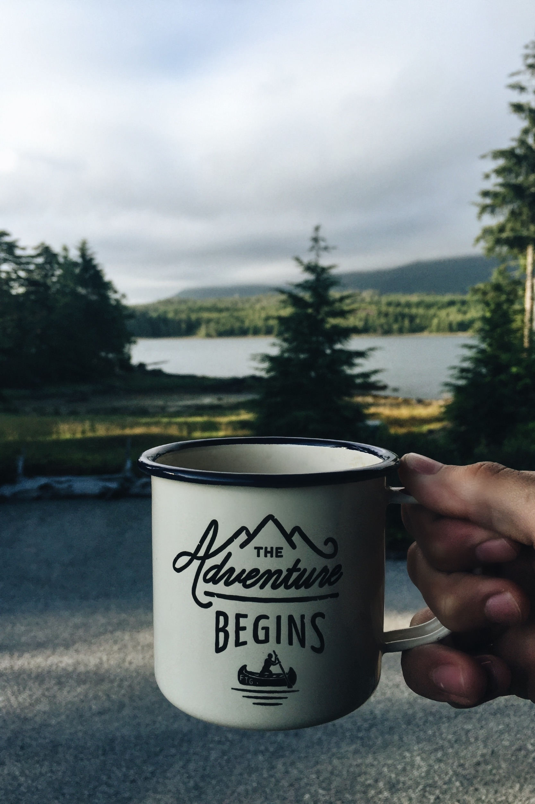

As you know, my name is Yuval, and as you might not know, I really really enjoy the art of coding.
I currently study computer engineering at York university, more specifically, at the Lassonde School of
Engineering. To let you see what I look like, here I am standing next to a couple orangutans
I initially started doing math in school, and had gained the nickname of "human calculator" in elementary
school due to my unimpressive ability to memorize a simple multiplication table. My teachers thought I
was smart, but there is no such thing as being smart, I was simply more interested in math and numbers
than other things. In the past few years I've been obsessed with coding, and in the past century, I've
been obsessed with improving my environment, any way I can using my skills. I am particularly
passionate about anything green; green energy, green forests, green layouts for sublime and eclipse, you get the
idea. My ambition in this life is to make the world a greener place using my coding, business, and
personal skills. I'm interested in making devices for researchers to better understand wildlife, as well
as building anything that will improve the current state of Earth's nature. I'm passionate and I like to
get things done, and that's exactly what I'm here to do.
Great question, I thought you might ask that. I find myself learning new things often, usually related to
coding, things that often don't find their way into projects and get forgotten or simply not practiced. This
blog is a way for me to put all of my thoughts together and put forth all the cool things I find that I'd
like to use in the future. By providing tutorials and making posts on certain topics, I am forced to
investigate further into it. Basically, this whole thing is a way for me to share what I learn, to journey
through the unknown and come out a little wiser, a better coder, and an overall better person.
You should know one more thing about me, and it's that I can do anything... provided I have coffee. I absolutely love coffee, it's my fuel for 'getting shit done'.
